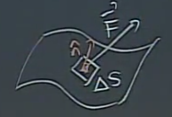

Uclu entegralleri gorduk, pek cok kordinat sisteminde bu hesaplari yapabiliyoruz. Simdi vektor alanlarini isleyecegiz, ozellikle akis (flux) ve is (work) kavramlarina bakacagiz.
Uzayda Vektor Alanlari
Vektor alani demek, her noktada bir vektor olmasi demek, bu vektorun her ogesinin $x,y,z$ kordinatlarina bagli olmasi demek. Alan $\vec{F}$ icin mesela
$$ \vec{F} = < P,Q,R > $$
olabilir ve $P,Q,R$ birer fonksiyondur, $P(x,y,z)$ gibi.
Ornekler
a)
Mesela kuvvet alanlari, yercekim kuvveti gibi, belli bir noktada belli bir yone bir kuvvet etkisi var, bu bir kuvvet alani, vektor alani olarak gosterilebilir. Yercekim alani orijin (0,0,0)'a dogru olan bir cekim kuvveti olsun, ve buyuklugu $\frac{c}{\rho^2}$ gibi bir sabite oranli olsun, ki $\rho$ orijine olan uzaklik. Kabaca bir resimde gosterirsek,
Goruldugu gibi cekim (ok) orijine dogru ve vektor buyuklugu (cekim kuvveti) uzaklik arttikca kuculuyor. Birkac vektor cizdik sadece fikir vermesi icin. Formulle belirtmek gerekirse,
$$ \vec{F} = \frac{-c < x,y,z >}{\rho^2} $$
$< x,y,z >$'nin negatifi alindi, $< x,y,z >$ vektoru orijinden $x,y,z$'ye giden vektor, oradan geri isaret eden vektor bunun negatif olurdu. Buyuklugu ise $-c / \rho^2$ ile carparak ayarliyoruz.
Benzer ornekler cogaltilabilir, elektrik alanlari, manyetik alanlar, vs.
b)
Hiz alanlari bir diger ornek. Mesela sivi akisini temsil etmek istiyorsak, ya da atmosferdeki ruzgar akisini incelemek istiyorsak, bunlari birer hiz alani olarak gosterilebilir.
c)
Gradyan alanlari
Bir fonksiyon $u = u(x,y,z)$'nin gradyani $\nabla u = < u_x, u_y, u_z >$ bir gradyan alani olusturur.
Tabii ustteki ornekleri cok kesin hatlarla birbirinden ayri gibi gormemek lazim, mesela elektrik ya da yercekim alanlari elektrik ya da yercekimsel potansiyel fonksiyonunun gradyan alanidir. Gradyan matematiksel bir teknik, pek cok yerde karsimiza cikabiliyor.
Yani vektor alanlari faydali seyler, bunu gorduk. Onlarla ne yapacagiz? Akis konusu ile baslayalim.
Akis (Flux)
Daha once akis kavramini iki boyutta gormustuk,

Bir vektor alani $\vec{F}$ icinde egri $C$ vardi, vektor alaninin egriye dik olan bileseni ile bir akis entegrali olusturmustuk, bu bir cizgi entegraliydi, formulu
$$ \int_C \vec{F} \cdot \hat{n} \mathrm{d} s $$
ki bu hesabin olctugu vektor alaninin ne kadar egri icinden / uzerinden gectigiydi. Sivi mekaniginde mesela bu, bir hiz alani baglaminda, bize egri uzerinden ne kadar sivi aktigini gosterebilirdi. Peki uc boyutta? Uc boyutta tek egri uzerinden, mesela esen ruzgar, hesabi biraz anlamsiz olur. Bir egri yerine bir yuzey uzerinden, icinden olan alan bileseni daha anlamli.
O zaman 3D icin bu entegrali degistirmek lazim, cizgi entegrali yerine yuzey entegrali gerekiyor. Yuzey iki boyutlu bir nesne, o sebeple cift entegral kullanmamiz lazim, tabii bu entegrali dogru kurmamiz gerekiyor, bu yuzeyin $x,y,z$ kordinatlari ile etkilesimi var, bir degiskenden kurtulmamiz lazim bir sekilde ki cift entegral hesaplayabilelim, vs. Kavramsal olarak cizgi entegraliyle paralellikler var, iki boyutta iki degisken vardi, egrinin ne oldugu uzerinden bu degiskenler bire inmisti, burada uc degisken yuzey formulu uzerinden ikiye indirgenecek.
3D akisi hesaplamak icin, $\vec{F}$ ve yuzey $S$ ile dusunursek (tek $\vec{F}$ vektoru aldatici olmasin her $x,y,z$ noktasinda bir $\vec{F}$ var), yuzeye her noktada dik olan $\vec{F}$ bilesenini bulmamiz lazim, yani vektor alanimin normal bileseni lazim, daha teknik belirtelim birim normal vektor $\hat{n}$.

Normal vektor yonune karar vermek lazim once, resimde goruldugu gibi yukari, ya da tam tersi asagi da alinabilir. Akis entegrallerinde bu karari vermek lazim, yuzeyin bir tarafi secilmeli, ve oraya dogru giden vektor pozitif olarak alinmali. Egri durumunda da bu tur bir secim yaptik, resme bakilirsa saga dogru, saat yonu gidisi pozitif olarak aldik. Her durumda isleyen bir kural yok ama eger bir bolge varsa orada disari "cikan" normaller daha iyi, o zaman bolgeden disari cikisi olcmus oluyoruz. Eger kapali bir yuzey yoksa genel olarak yukari yonu secmek daha akilda kalir bir yontem olabilir.
Neyse yon secildikten sonra akis entegrali,
$$ \int \int_S \vec{F} \cdot \hat{n} \mathrm{d} S $$
$\mathrm{d} S$ yuzey alan ufak parcasidir. Niye $\mathrm{d} A$ kullanmadim, cunku bu sembolu ileride kordinate yuzeyleri icin kullanmak istiyorum, daha once cift entegrallerde gordugumuz gibi.
Akis hesabina gelelim, her ufak yuzey parcasi $\Delta S$ icin oradaki vektor alani $\vec{F}$'nin yuzeye dik olan bilesenini hesapliyorum (o noktadaki $\hat{n}$ ile carparak, bu bize $\vec{F}$'nin o noktadaki yuzeye dik bilesenini verecektir), bu sonucu $\Delta S$ ile carpiyorum, ve bunu her parca icin yaparak sonuclari topluyorum, cift entegral bu anlama geliyor.

Not: Bazi kaynaklarda bazen $\mathrm{d} \vec{S}$ gibi bir kullanim goruyorsunuz, bu aslinda $\hat{n} \mathrm{d} S$ demek oluyor. Vektor $ud \vec{S}$ yuzeye dik olan ve buyuklugu ufak yuzey alanina tekabul eden bir vektordur. Niye kullaniliyor? Daha az sembol yazmak icin degil sadece, bazen $ud \vec{S}$ hesabini yapmak ayri ayri $\hat{n}$ ve $\mathrm{d} S$ kullanmaktan daha kolay oluyor.
Ornek
$\vec{F} = < x,y,z >$ alaninin orijinde duran ve $a$ capli bir kure icinden akisini hesaplayin.
Cevap
Soru oyle kurulmus ki cevap basit, cunku elde bir kure var, vektor alani $< x,y,z >$, o zaman her noktada normal vektor ve vektor alani ayni yonu gosterir.
$$ \hat{n} = \frac{1}{a} < x,y,z > $$
Ustteki birim vektor cunku $\sqrt{x^2 + y^2 + z^2} = a$.
Simdi $\vec{F} \cdot \hat{n}$'yi hesaplayalim, adim adim ilerliyoruz, $\vec{F}$ her yerde $\hat{n}$ ile paralel oldugu icin $\vec{F} \cdot \hat{n} = |\vec{F}| |\hat{n}| = |\vec{F}|$. Vektor $|\hat{n}|$ yokoldu cunku birim vektor, buyuklugu 1. Peki $|\vec{F}|$ nedir? Her noktada bu deger $\sqrt{x^2 + y^2 + z^2}$ yani $a$. O zaman $\vec{F} \cdot \hat{n} = a$.
[devam edecek]